| 日付 | 2018年11月25日（日） |
|---|---|
| 山域 | 奥多摩 |
| メンバー | 家族（妻、長女・7歳、長男・5歳） |
| 山行形態 | 子連れ日帰り |
| アクセス | 車 |
| ルート (Map) | 小河内ダム駐車場 (8:16) - (10:01) サス沢山 - (11:11) 惣岳山 - (11:28) 御前山 (12:32) - (12:54) 惣岳山 - (13:44) サス沢山 - (14:57) 小河内ダム駐車場 |
3連休の最終日、高速道路も山も混んでそうなので、極力混雑の影響を
避けられそうな奥多摩の御前山に行くことにする。
御前山に行くのは10年振りだ。
小河内ダム前の駐車場に車を停める。標高530m。
まだ朝早いため駐車場は空いている。
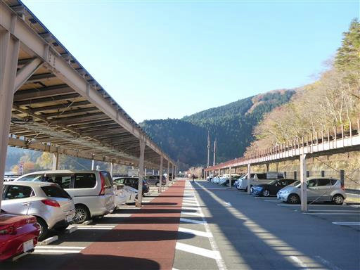
紅葉が美しい。今はこの辺りがちょうど紅葉の季節だ。
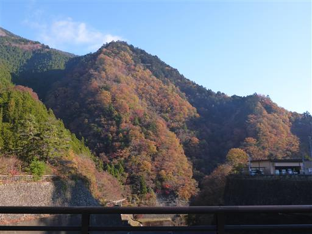
小河内ダムを渡る。1957年に造られた古いダムだ。
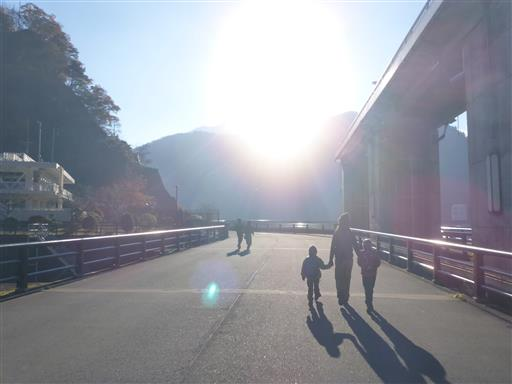
奥多摩湖。多摩川を堰き止めてできた湖だ。
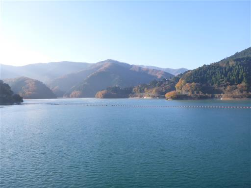
水の色は青緑色で美しい。
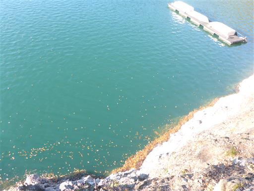
下流方面。堤高148mでかなり高度感がある。

奥多摩湖いこいの路に入っていく。
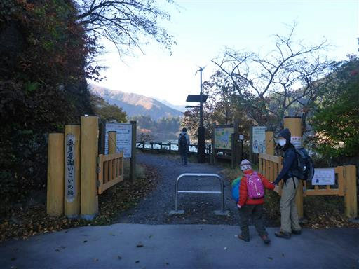
奥多摩湖の景色がきれいだ。しかし道が少しおかしい。
登山口が見つからないため引き返すことにする。
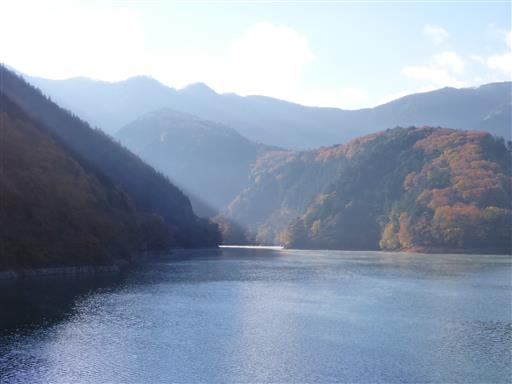
ダムを渡って右に行ってしまったのだが、正しくは左に行かなければならなかったようだ。
10分ほど時間をロスする。
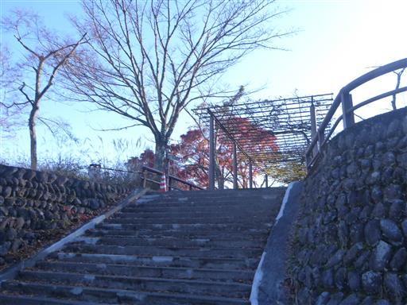
ここから登山道に入っていく。
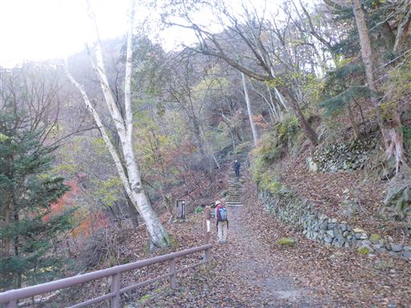
割れた石を発見。娘はパズルみたいと言って喜んでいる。
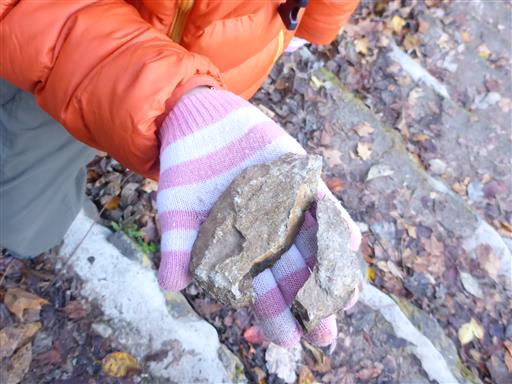
登山道は初っ端からかなりの急斜面が続く。
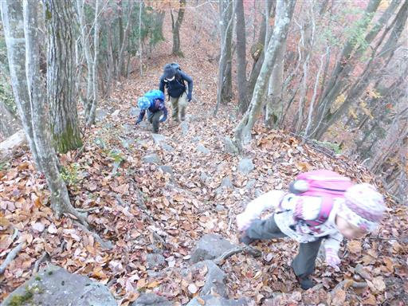
大きな木が折れている。まだ新しそうだ。
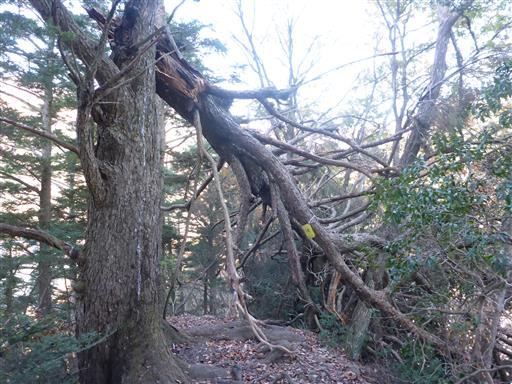
頭上注意の案内が出ている。日付をみると一昨日だ。
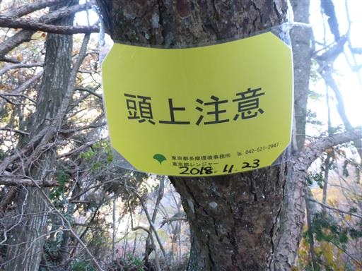
ようやく少し傾斜が緩む。今度は痩せ尾根だ。
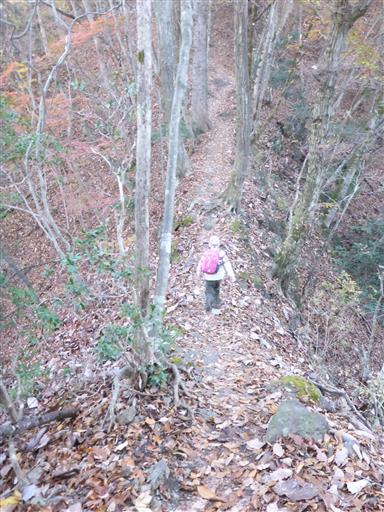
日が短いのでまだ太陽は低い位置にあり、横から光が差し込んでいる。
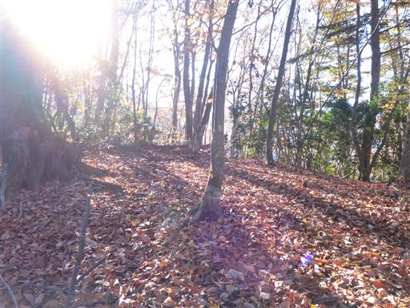
息子がキリギリスを発見。
きれいなキリギリスだが、寒くてもうほとんど動かない。
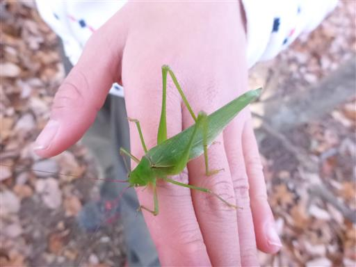
サス沢山に到着。標高939m。
ここには立派な展望台がある。
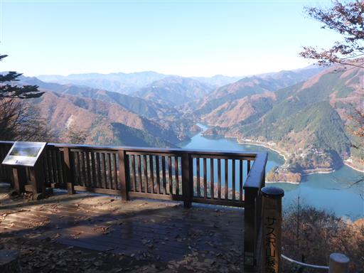
展望台から望む奥多摩湖と周囲の山々。
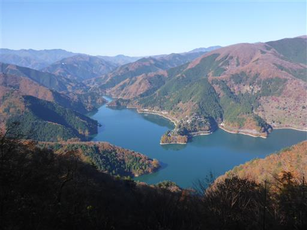
ドクロの形をした枯れ木。
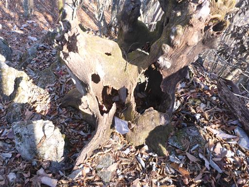
目の前に御前山の前衛峰の惣岳山が見えてくる。
尾根が広くなり歩きやすくなったので、息子はスキップしている。
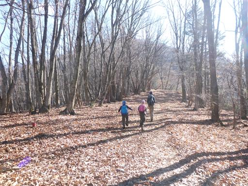
岩がいくつか転がっている。子供たちはアスレチック代わりに登って遊び出す。

日影は霜で真っ白だ。
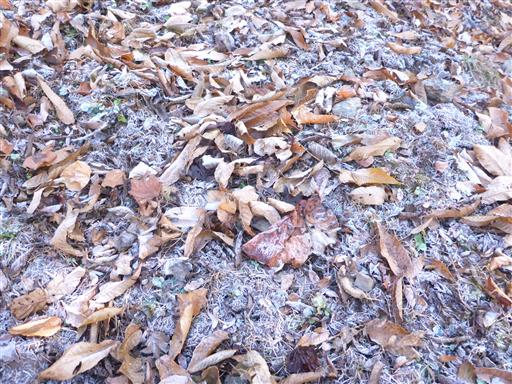
惣岳山の山頂に到着する。標高1349m。
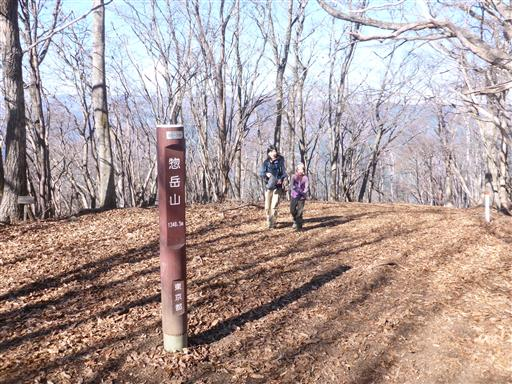
目的地の御前山まであともう少しなのだが、息子は疲れてベンチに座ってしまう。
妻と娘が先に歩き出したので、息子もしぶしぶ歩き出す。
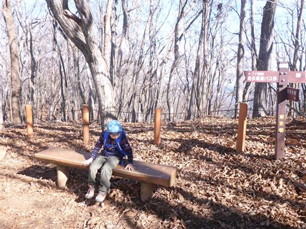
妻と娘を走って追いかける。
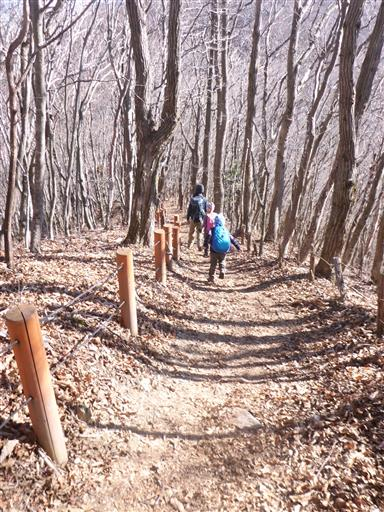
少し下って登ると山頂が見えてくる。
山頂周辺で木の伐採作業が行われている。
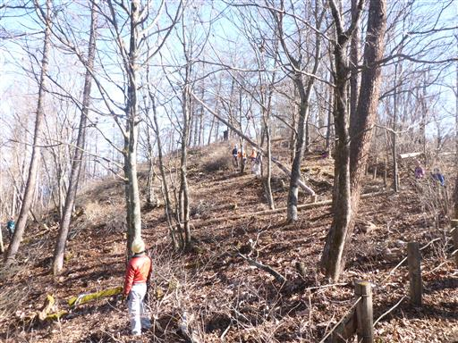
御前山に到着。標高1405m。ものすごく立派な山頂標識だ。
この辺りの山はここ最近山頂標識がこの形になったそうだが、
お目にかかるのは初めてだ。
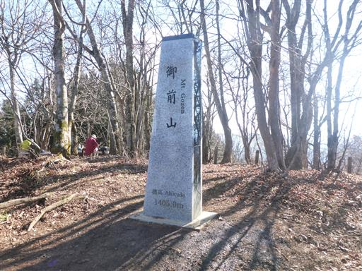
山頂はそこそこ広い。
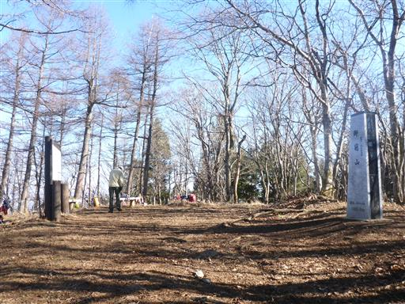
周囲は木に覆われていてあまり展望はないが、少しだけ石尾根が見える。
この山の展望を良くするために伐採作業を行っていたのだろうか？
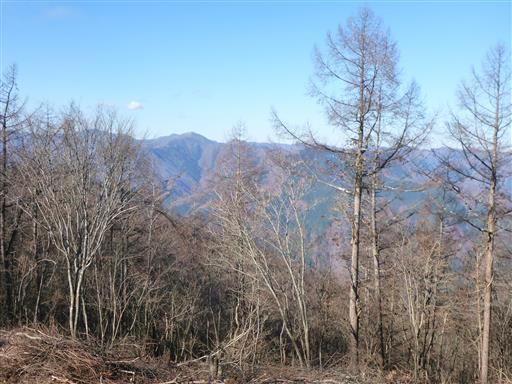
下山は元来た道を下る。朝よりも紅葉が美しい。
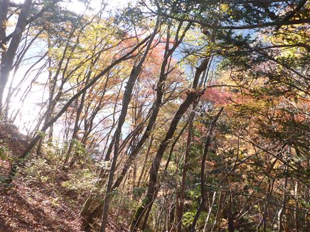
小河内ダムに無事下山。
今回はそれなりに標高差があるロングコースなので息子は少々辛そうだった。
気を紛らわせるものもあまり無く、非常に地味な山だった。
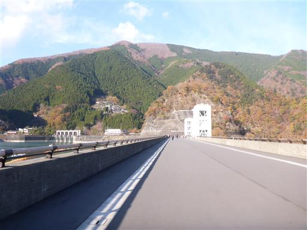